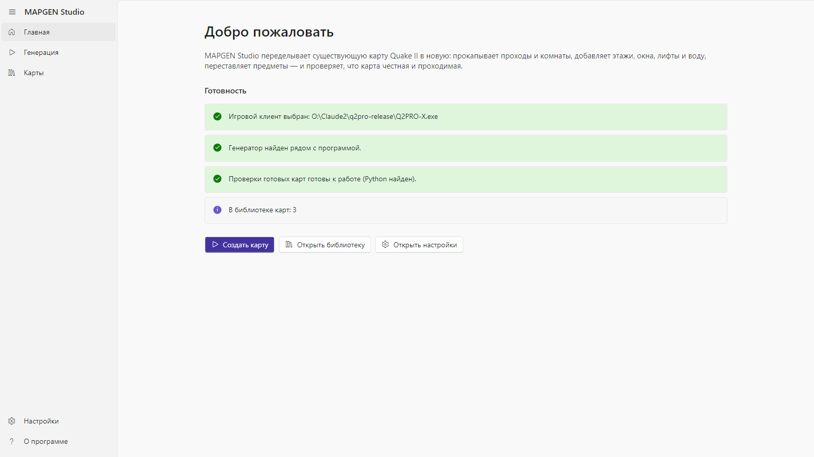
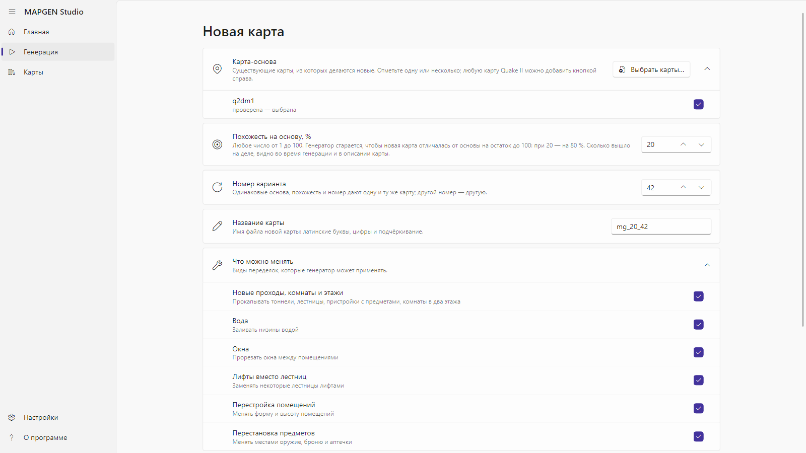
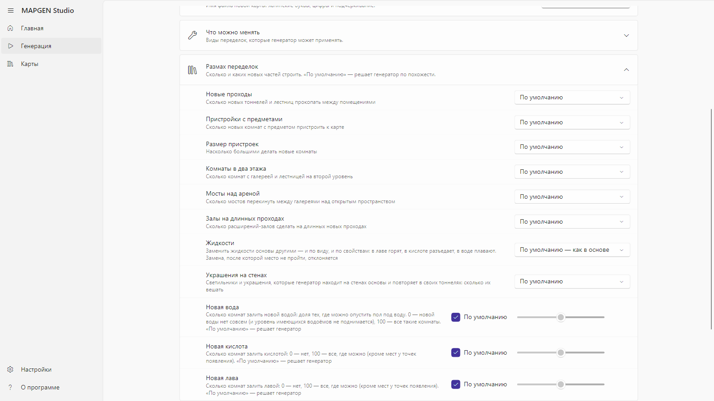
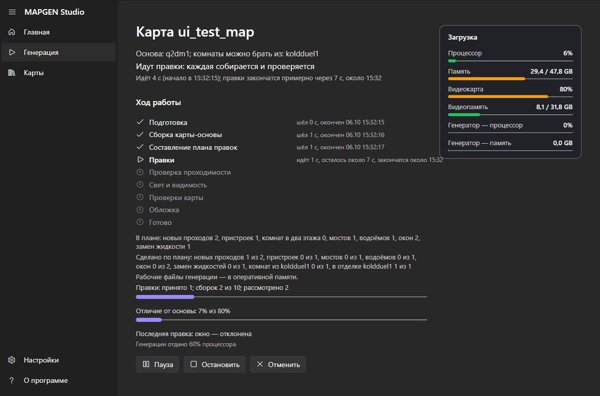
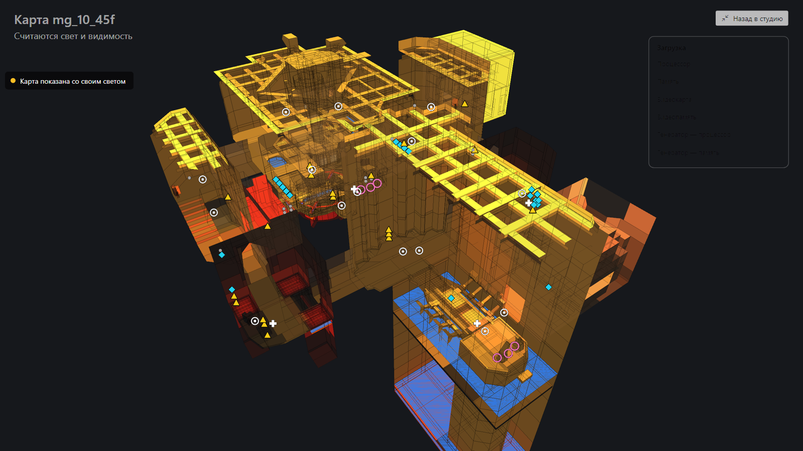
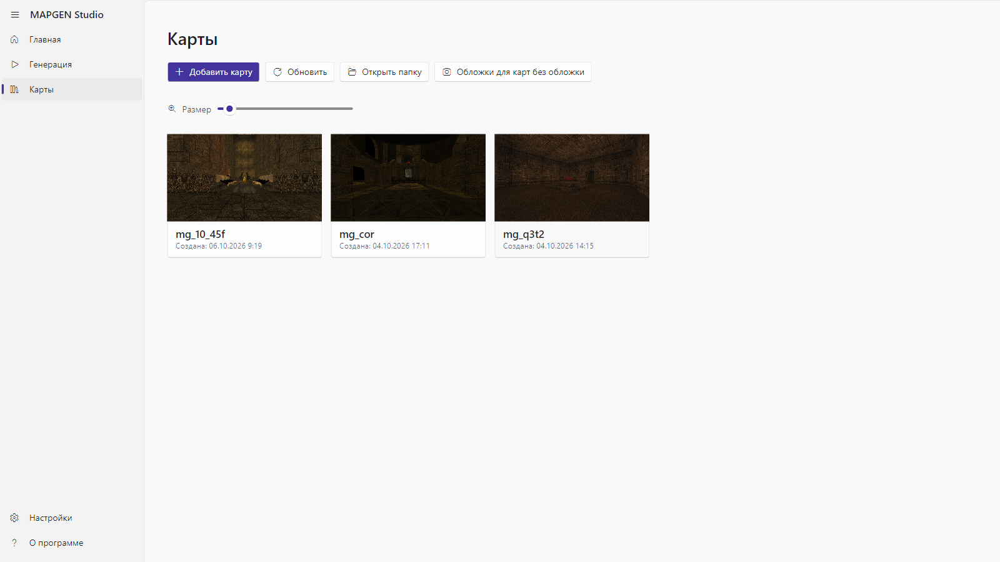
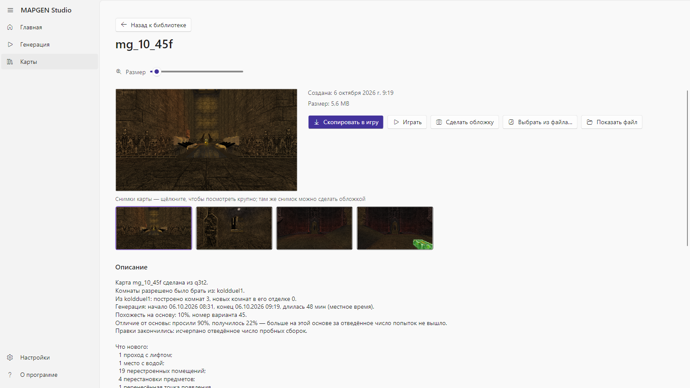
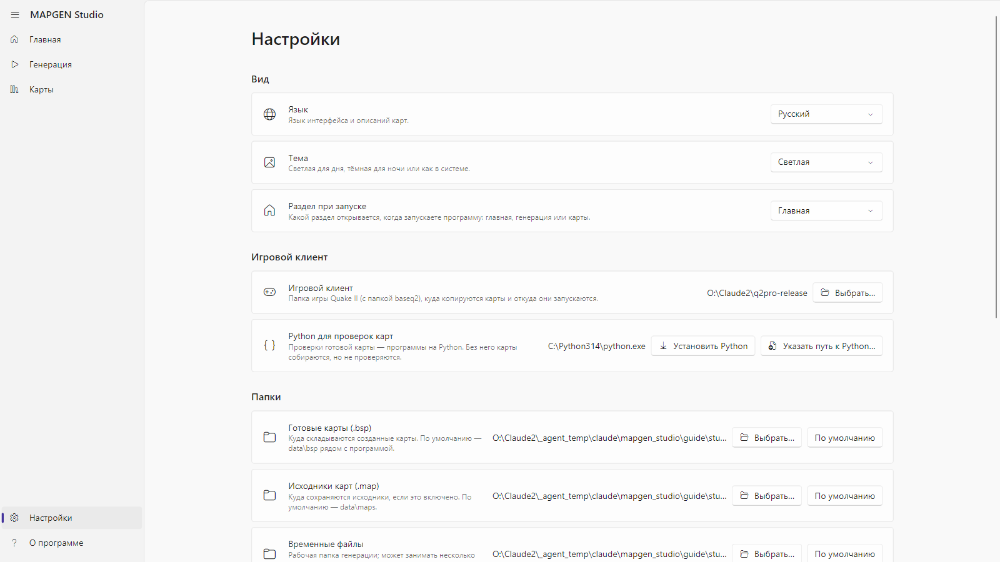
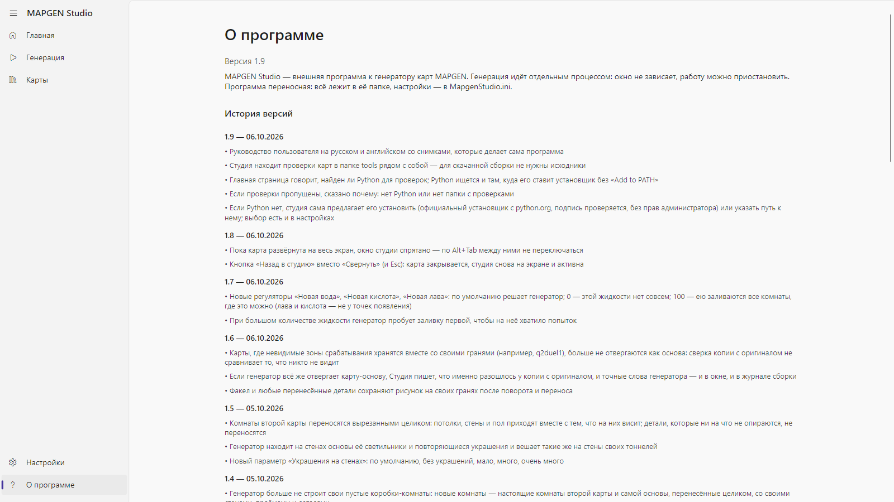

MAPGEN Studio — руководство
MAPGEN Studio переделывает готовую карту Quake II в новую: прокладывает проходы в скале, переносит комнаты из другой карты, заливает низины водой, лавой или кислотой, меняет отделку, переставляет предметы — и проверяет, что по новой карте можно пройти, что она освещена и что в ней ничего не сломано. Карта-основа при этом остаётся на месте, новая карта кладётся рядом.
Сейчас программа делает новые карты из уже готовых. В будущих версиях появится и сборка новой карты с нуля, без карты-основы; пока эта возможность не предоставляется.
Все снимки в этом руководстве сделаны самой программой из той версии, к которой оно приложено.
Что нужно
- Windows 10 или 11, 64 бита.
- Quake II с папкой
baseq2 — любой клиент: из неё берутся текстуры, на ней же запускается игра для обложек. - Python 3.10 или новее — для проверок готовой карты. Если его нет, программа сама предложит его установить (кнопка «Установить Python» скачает официальный установщик с python.org и поставит его только для вас, без прав администратора) или указать путь к уже установленному («Указать путь к Python…»). Без Python карта соберётся, но проверки будут пропущены.
- Карты-основы: программа не содержит карт. Любой файл карты Quake II (
.bsp) из вашей игры можно добавить как основу прямо из программы.
Первый запуск

Главная страница показывает, готова ли программа к работе:
- Игровой клиент — папка с игрой. Если она не выбрана, нажмите «Открыть настройки» и укажите папку, где лежит
baseq2. - Генератор — папка
engine рядом с программой. Она входит в сборку; если её нет, сборка повреждена. - Проверки готовых карт — найден ли Python. Если нет, тут же кнопки «Установить Python» и «Указать путь к Python…».
- В библиотеке карт — сколько карт уже сделано.
Три кнопки ведут к главным разделам: «Создать карту», «Открыть библиотеку», «Открыть настройки». Те же разделы — в меню слева: Главная, Генерация, Карты, Настройки, О программе.
Генерация

Карта-основа
Отметьте одну или несколько карт. Кнопка «Выбрать карты…» добавляет любой файл карты Quake II с диска — он копируется к программе и дальше всегда есть в списке. У каждой карты написано, проверена ли она уже генератором или это первая проба.
Если отмечено несколько карт, выберите, что из них сделать:
- По карте из каждой — каждая отмеченная карта станет основой своей новой карты, по очереди.
- Одну карту из нескольких — первая отмеченная карта будет основой, а из остальных генератор берёт комнаты и переносит их в скалу целиком, со стенами, потолком, светильниками и украшениями.
Похожесть на основу и номер варианта
- Похожесть на основу, % — насколько новая карта должна остаться похожей на старую. 90 — почти та же карта с небольшими правками; 10 — генератор меняет всё, что может. Любое число от 1 до 100.
- Номер варианта — число, от которого зависит, какие именно правки будут выбраны. Та же основа, та же похожесть и тот же номер дают ту же карту; другой номер — другую.
- Название карты — латинскими буквами и цифрами. Программа предлагает своё:
mg_ + похожесть + номер варианта.
Размах переделок

Раздел «Размах переделок» раскрывает дополнительные настройки. У каждой есть значение «По умолчанию» — тогда решает генератор, исходя из похожести. Остальные значения — ваш прямой заказ:
- Новые проходы — сколько новых тоннелей и лестниц пробить в скале между комнатами.
- Пристройки с предметами и Размер пристроек — сколько комнат-пристроек с оружием или бронёй добавить и какого размера (небольшие, средние, большие, залы).
- Комнаты в два этажа — сколько комнат получат галерею и лестницу на второй уровень.
- Мосты над ареной — сколько мостов перекинуть над открытым пространством.
- Залы на длинных проходах.
- Жидкости — заменить жидкости основы другими: воду лавой, лаву водой, кислоту лавой и так далее, или перемешать. Меняется и вид, и свойства: в лаве горят, в кислоте разъедает, в воде плавают.
- Украшения на стенах — генератор находит на стенах основы её светильники и повторяющиеся украшения и вешает такие же в своих тоннелях: без украшений, мало, много, очень много.
- Новая вода, Новая кислота, Новая лава — три ползунка. По умолчанию решает генератор; 0 — этой жидкости не добавлять совсем; 100 — залить ею все комнаты, где это можно. Генератор заливает только комнаты с ровным полом, под которым нет другой комнаты, и не отрезает ни предметы, ни проходы. Лаву и кислоту он не кладёт рядом с точками появления; проходы между комнатами заливает только водой.
«Что можно менять» перечисляет семейства правок; любое можно выключить галочкой.
Галочка «Сохранять исходник карты (.map)» оставляет рядом с готовой картой её исходник для редактора карт.
Кнопка «Начать генерацию» запускает работу.
Ход генерации

Страница генерации показывает:
- Стадии: Подготовка → Сборка карты-основы → Составление плана правок → Правки → Проверка проходимости → Свет и видимость → Проверки карты → Обложка → Готово. У идущей стадии видно время, у законченной — когда закончилась.
- Правки — сколько правок принято, сколько сборок потрачено из отведённых, сколько рассмотрено, и насколько карта уже отличается от основы.
- Сделано по плану — что из задуманного построено: новых проходов, пристроек, водоёмов, окон, комнат из второй карты.
- Схему карты — план карты сверху или под наклоном, на котором видны принятые правки и, на стадии света, как освещается карта. Кнопка «На весь экран» разворачивает схему на весь экран; пока она развёрнута, окно программы спрятано.
- Загрузку — процессор, память, видеокарта, видеопамять: всей машины и отдельно генератора.
- Подробный журнал — строки, которые пишет генератор.

На развёрнутой схеме кнопка «Назад в студию» (или клавиша Esc) закрывает её и возвращает окно программы.
Кнопки под стадиями:
- Пауза / Продолжить — генератор останавливается на месте и продолжает с него же.
- Остановить — генерация прерывается; её можно продолжить позже с того же места со страницы «Генерация» (там появляется карточка «Прерванная генерация» с кнопками «Продолжить» и «Удалить»), если в настройках включено «Сохранять принятые шаги на диск».
- Отменить — генерация останавливается, и все её рабочие файлы удаляются.
Когда карта готова, программа сообщает об этом и кладёт карту в библиотеку. Если проверки карты не пройдены, это тоже написано — с подробностями в описании карты.
Если генератор отказался
Первым делом генератор переводит карту-основу обратно в исходник и собирает заново, чтобы потом менять копию. Если копия разошлась с оригиналом, он не трогает такую карту и пишет, в чём именно разошлось: например, «что нарисовано на стенах» — и точные слова генератора ниже. То же попадает в журнал.
Библиотека карт

Раздел «Карты» показывает все готовые карты плитками с обложками. Размер плиток меняется ползунком «Размер» или колёсиком мыши с зажатым Ctrl. «Добавить карту» берёт в библиотеку любую карту с диска; «Обновить» перечитывает папку; «Открыть папку» открывает её в проводнике.

Щелчок по плитке открывает карту:
- Описание — из какой основы сделана, какие карты давали комнаты, похожесть и номер варианта, что нового построено, сколько длилась генерация.
- Проверки карты — каждая проверка с отметкой «пройдена» / «НЕ пройдена» и объяснением простыми словами.
- Снимки карты — щелчок открывает снимок крупно; стрелками листаются остальные, Esc закрывает; любой снимок можно сделать обложкой. «Сделать обложку» запускает игру на карте, снимает несколько видов и закрывает её; «Выбрать из файла…» берёт обложку из своей картинки.
- Играть — запускает игру на этой карте. Ваши настройки игры не меняются.
- Скопировать в игру — кладёт карту в папку карт вашего клиента.
Настройки

- Вид: язык (русский или английский), тема (как в системе, светлая, тёмная), «Раздел при запуске».
- Папки: готовые карты, исходники карт, временные файлы. Любую можно сменить или вернуть «По умолчанию».
- Игровой клиент — папка с игрой, в которой есть
baseq2. - Python для проверок карт — какой Python использует программа; здесь же его можно установить или указать.
- Нагрузка на процессор — какую долю процессора отдавать генератору днём и ночью, и какие часы считать дневными. Генератор никогда не берёт больше; остальное остаётся вам.
- Память и диск — сколько свободной памяти можно занять рабочими файлами генератора (тогда диск почти не используется) и сохранять ли принятые шаги на диск — без этого прерванную генерацию нельзя продолжить.
- Снимать обложки автоматически — после каждой готовой карты программа сама запускает игру и делает обложку.
Настройки сохраняются в файл рядом с программой; где именно — написано внизу страницы.
О программе

Версия программы и история версий: что менялось в каждой, самая новая сверху.
Если что-то не так
- «Игровой клиент не выбран» — укажите в настройках папку с игрой; в ней должна быть папка
baseq2. - «Генератор не найден» — рядом с программой нет папки
engine. Распакуйте сборку заново целиком. - «Проверки карты пропущены: не найден Python» — нажмите «Установить Python» на главной странице или в настройках (или «Указать путь к Python…», если он уже стоит) и запустите генерацию снова; карта от этого не меняется, только появляются проверки.
- «Карта не получилась: генератор не смог точно пересобрать эту карту-основу» — в сообщении написано, в чём копия разошлась с оригиналом. Такую карту пока нельзя брать основой; попробуйте другую.
- Генерация прервалась — на странице «Генерация» есть карточка прерванной генерации с кнопкой «Продолжить».
- Генератор упал — программа покажет, где лежит запись о падении; её можно отправить разработчику, а генерацию продолжить с того же места.
В следующих версиях
- Сборка карты с нуля — новая карта без карты-основы. Генератор это уже умеет в черновом виде, но в программе эта возможность пока не предоставляется: она появится, когда карты из готовых будут доведены до нужного качества.
Где лежат файлы
- Готовые карты: папка «Готовые карты (.bsp)» из настроек; по умолчанию —
data\bsp рядом с программой. - Описания, обложки и снимки:
data\descriptions, data\covers. - Рабочие файлы идущей генерации: папка «Временные файлы»; после готовой карты они удаляются, небольшой отчёт о генерации остаётся в
data\runs\<название карты>. - Настройки:
MapgenStudio.ini рядом с программой.